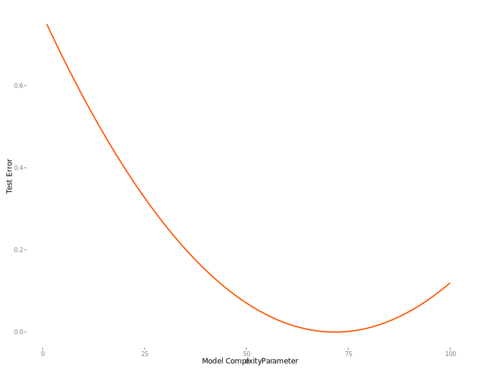

Cross-Validation
As noted in the previous section, in machine learning approaches we are particularly concerned with prediction error on new data. The simplest validation approach would be to split the data available into a training and test set as discussed previously. We estimate the model on the training data, and apply the model to the test data, get the predictions and measure our test error, selecting whichever model results in the least test error.  A hypothetical learning curve display the results of such a process is shown to the right. While fairly simple, other approaches are more commonly used and result in better estimates of performance18.
Adding Another Validation Set
One technique that might be utilized for larger data sets, is to split the data into training, validation and final test sets. For example, one might take the original data and create something like a 60-20-20% split to create the needed data sets. The purpose of the initial validation set is to select the optimal model and determine the values of tuning parameters. These are parameters which generally deal with how complex a model one will allow, but for which one would have little inkling as to what they should be set at before hand (e.g. our \(\lambda\) shrinkage parameter in regularized regression). We select models/tuning parameters that minimize the validation set error, and once the model is chosen examine test set error performance. In this way performance assessment is still independent of the model development process.

An illustration of 3-fold classification.
K-fold Cross-Validation
In many cases we don’t have enough data for such a split, and the split percentages are arbitrary anyway, with results that would be specific to the split chosen. Instead we can take a typical data set and randomly split it into \(\kappa=10\) equal-sized (or close to it) parts. Take the first nine partitions and use them as the training set. With chosen model, make predictions on the test set. Now do the same but this time use the 9th partition as the holdout set. Repeat the process until each of the initial 10 partitions of data have been used as the test set. Average the error across all procedures for our estimate of prediction error. With enough data, this (and the following methods) could be used as the validation procedure before eventual performance assessment on an independent test set with the final chosen model.
Leave-one-out Cross-Validation
Leave-one-out (LOO) cross-validation is pretty much the same thing but where \(\kappa=N\). In other words, we train a model for all observations except the \(\kappa^{th}\) one, assessing fit on the observation that was left out. We then cycle through until all observations have been left out once to obtain an average accuracy.
Of the two, K-fold may have relatively higher bias but less variance, while LOO would have the converse problem, as well as possible computational issues19. K-fold’s additional bias would be diminished would with increasing sample sizes, and generally 5 or 10-fold cross-validation is recommended. However, many model selection techniques (e.g. via AIC) have a leave-one-out interpretation.
Bootstrap
With a bootstrap approach, we draw \(B\) random samples with replacement from our original data set, creating \(B\) bootstrapped data sets of the same size as the original data. We use the \(B\) data sets as training sets and, using the original data as the test set, average the prediction error across the models.
Other Stuff
Along with the above there are variations such as repeated cross validation, the ‘.632’ bootstrap and so forth. One would want to do a bit of investigating, but \(\kappa\)-fold and bootstrap approaches generally perform well. If variable selection is part of the goal, one should be selecting subsets of predictors as part of the cross-validation process, not at some initial data step.
Along with some of the other works cited, see Harrell (2015) for a good discussion of model validation.↩
For squared-error loss situations, there is a Generalized cross-validation (GCV) that can be estimated more directly without actually going to the entire LOO procedure, and functions similarly to AIC.↩